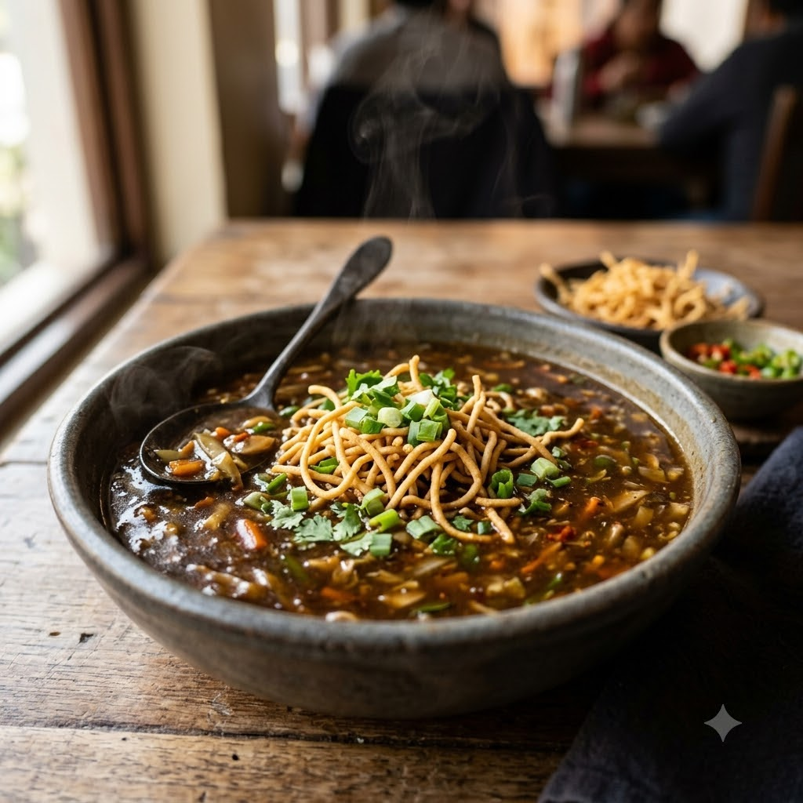

Vegetable Manchow Soup

Vegetable Manchow Soup
Chef Magic – Sauté + Boil Auto 20 min — Serves 4
Vegan • Everyday • Indo-Chinese
Ingredients
- 1/2 cup finely chopped mixed vegetables (carrot, beans, cabbage, capsicum)
- 1 tbsp ginger-garlic paste (adrak-lehsun paste)
- 2 tbsp soy sauce
- 1 tsp chilli sauce
- 1 tsp vinegar
- 4 cups vegetable stock or water
- 2 tbsp cornflour, mixed with water, for the slurry
- 2 tbsp oil
- Salt & pepper to taste
- Fried noodles, spring onion greens, to garnish
Method
1Add oil to the jar; select Sauté (Speed 2–4, ~130–160°C) and cook the ginger-garlic paste for 1 minute.
2Add the chopped vegetables and sauté for 5 minutes.
3Add stock, soy sauce, chilli sauce and vinegar; select Boil (Speed 1–2, 100°C) and simmer for 8 minutes.
4Stir in the cornflour slurry and cook a further 4 minutes until the soup turns glossy and slightly thickened. Season with salt and pepper.
5Ladle into bowls and top with crispy fried noodles and spring onion greens.
Tip: The crunchy fried noodles on top are what make this a Manchow soup rather than a plain vegetable soup — don’t skip